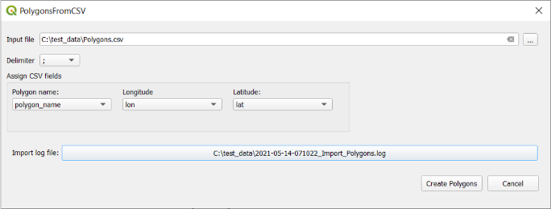
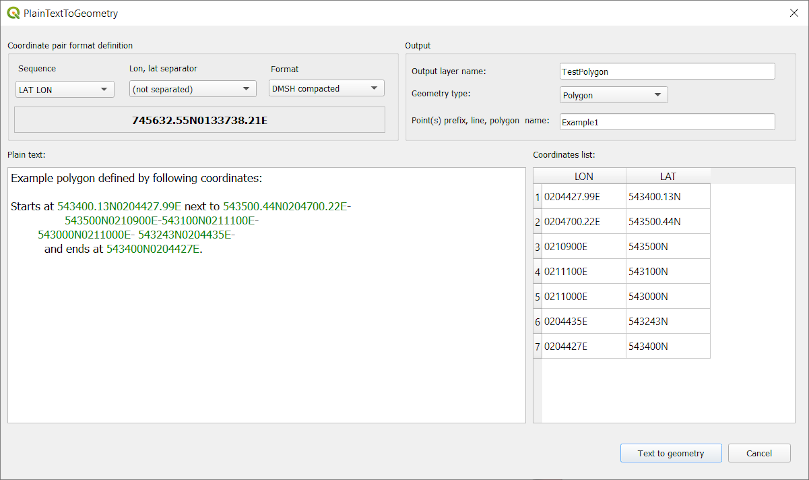
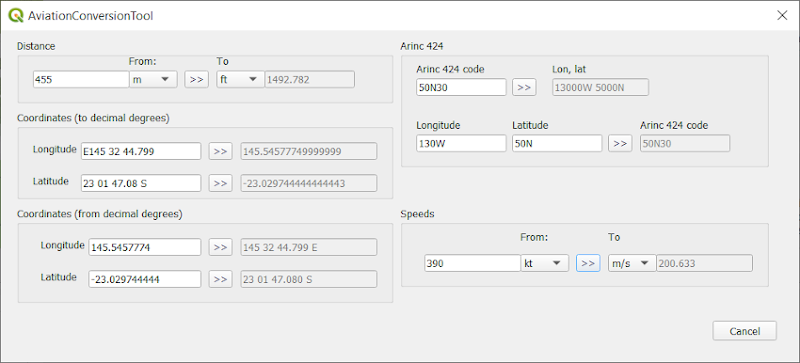
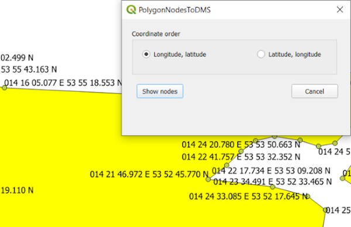
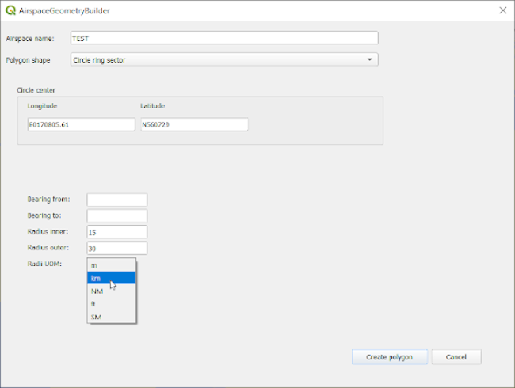
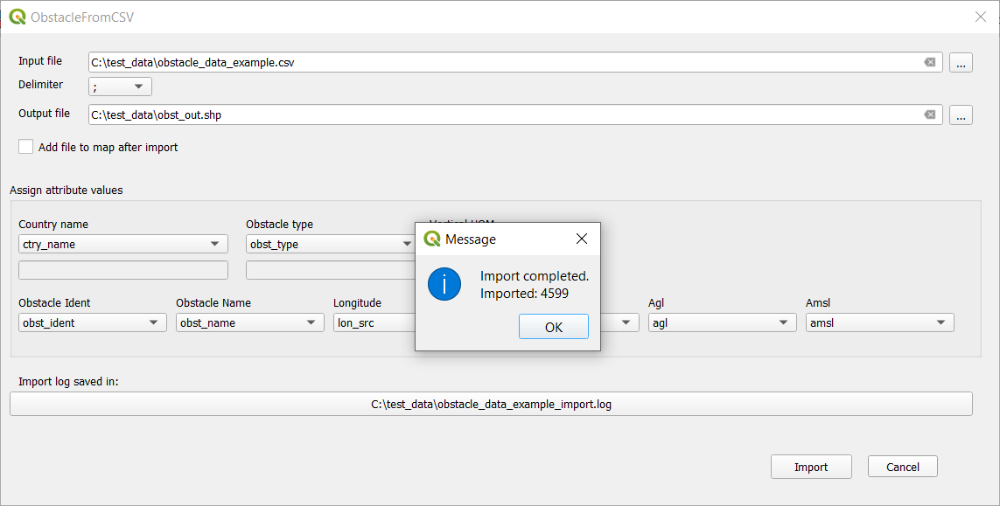
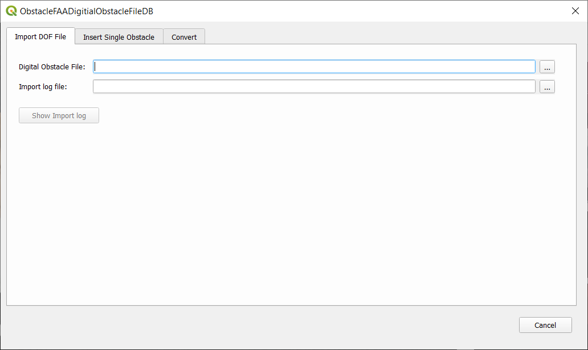

QGIS PLUGIN
PolygonsFromCSV
Create polygon features from coordinate data stored in CSV files.
Python · PyQGIS · QGIS · CSV
View project →
GIS tools and automation workflows developed to process, transform and automate geospatial data processing tasks.
QGIS plugins developed with Python and PyQGIS to extend QGIS functionality and automate specialized GIS workflows.

Create polygon features from coordinate data stored in CSV files.

Extract coordinates from plain text and create points, lines or polygons.

Convert between units and coordinate formats commonly used in aviation workflows.

Extract polygon node coordinates and display them in degrees, minutes and seconds format.

Create aviation airspace geometries from bearings, distances, radii and coordinate definitions.

Import obstacle CSV data with different source fields and convert it into a standardized GIS dataset.

Import and manage aviation obstacle data using QGIS and a spatial database.